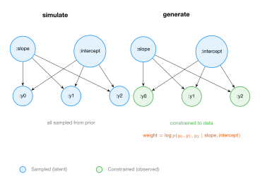
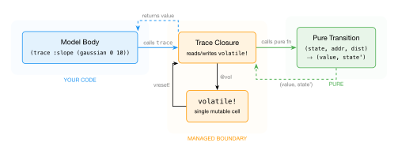

GenMLX Tutorial
Probabilistic programming with a functional core.
GenMLX is a probabilistic programming language in ClojureScript that runs on Apple’s MLX GPU framework. It implements the Generative Function Interface — a small set of operations that separate how you write models from how you run inference.
The architecture is organized around one principle: your model is pure; the framework manages state. When you write a model, you declare random choices — you say what you need (a value from this distribution at this address). The handler determines how to provide it: sampling from the prior, constraining to observed data, updating from a previous execution, or regenerating for MCMC. The same model code works with all of these — without modification, without knowing which one is running. You never touch mutable state. The framework handles it.
By the end of this tutorial, you will:
- Write probabilistic models using
genandtrace - Condition on data and run inference (IS, MCMC, SMC, VI)
- Understand how the handler architecture works and why it’s pure
- Compose models with splice and combinators
- Use GPU-accelerated vectorized inference
- Train models with gradients and neural networks
Prerequisites
- macOS with Apple Silicon (M1/M2/M3/M4)
- Bun (or Node.js 18+)
- The GenMLX repository cloned and set up:
git clone https://github.com/robert-johansson/genmlx
cd genmlx
git submodule update --init --recursive node-mlx
cd node-mlx && npm install && npm run build && cd ..
bun install
Running examples
Save any code snippet to a file and run it:
bun run --bun nbb example.cljs
A 30-second demo
(ns demo
(:require [genmlx.protocols :as p]
[genmlx.dynamic :as dyn]
[genmlx.mlx :as mx]
[genmlx.dist :as dist]
[genmlx.choicemap :as cm])
(:require-macros [genmlx.gen :refer [gen]]))
(def coin-model
(gen []
(let [bias (trace :bias (dist/beta-dist 2 2))]
(trace :flip (dist/bernoulli bias)))))
(let [model (dyn/auto-key coin-model)
trace (p/simulate model [])]
(println "bias:" (mx/item (cm/get-choice (:choices trace) [:bias])))
(println "flip:" (mx/item (cm/get-choice (:choices trace) [:flip])))
(println "score:" (mx/item (:score trace))))
That’s it. A model, a simulation, a trace. Let’s build from here.
Your First Model
A probabilistic model is a program that makes random choices. GenMLX lets you write these programs as ordinary ClojureScript functions — with one addition: you name each random choice by giving it an address. That’s all the gen macro adds to a regular function.
The gen macro
(def simple-model
(gen []
(trace :x (dist/gaussian 0 1))))
This defines a generative function called simple-model. Inside the body:
tracedeclares a random choice. It says: “I want a value from this distribution at this address.”:xis the address — a keyword that names this particular choice.(dist/gaussian 0 1)is the distribution — a Gaussian with mean 0 and standard deviation 1.
The model doesn’t sample, doesn’t constrain, doesn’t know what will happen to the value. It just declares what it needs. The framework decides the rest.
Running a model: simulate
To run the model forward — sampling every random choice from its distribution — use simulate:
(let [model (dyn/auto-key simple-model)
trace (p/simulate model [])]
(println "value:" (mx/item (cm/get-choice (:choices trace) [:x])))
(println "score:" (mx/item (:score trace))))
simulate returns a trace — a record of one complete execution. A trace has five fields:
| Field | What it holds |
|---|---|
:gen-fn | The generative function that produced this trace |
:args | The arguments passed to the function |
:choices | A choice map — a map from addresses to the values chosen |
:retval | The return value of the function |
:score | The log-probability of all choices: \(\log p(\text{all choices})\) |
The score is the sum of log-probabilities of every random choice made during execution. For a single Gaussian choice, it’s the log-density of the sampled value under \(\mathcal{N}(0, 1)\).
Inspecting choices
The choice map is a persistent Clojure data structure. You can read individual values:
(let [model (dyn/auto-key simple-model)
trace (p/simulate model [])
choices (:choices trace)]
;; Check if an address exists
(println "has :x?" (cm/has-value? (cm/get-submap choices :x)))
;; Get the value at an address
(println "x =" (mx/item (cm/get-choice choices [:x])))
;; The score
(println "score =" (mx/item (:score trace))))
Values in GenMLX are MLX arrays — GPU-resident tensors. Use mx/item to extract a plain JavaScript number when you need to print or compare.
A coin flip model
Let’s build something with more structure. A classic Bayesian model: we have a coin with unknown bias, and we flip it three times.
(def coin-model
(gen []
(let [bias (trace :bias (dist/beta-dist 2 2))]
(trace :flip1 (dist/bernoulli bias))
(trace :flip2 (dist/bernoulli bias))
(trace :flip3 (dist/bernoulli bias))
bias)))
Here:
:biasis sampled from a Beta(2, 2) distribution — a prior that favors values near 0.5 but allows anything between 0 and 1.- Each flip is a Bernoulli trial with probability equal to the bias.
- The function returns the bias value.
Each trace call names its choice. The model has four addresses: :bias, :flip1, :flip2, :flip3. Simulate it:
(let [model (dyn/auto-key coin-model)
trace (p/simulate model [])]
(println "bias:" (mx/item (cm/get-choice (:choices trace) [:bias])))
(println "flip1:" (mx/item (cm/get-choice (:choices trace) [:flip1])))
(println "flip2:" (mx/item (cm/get-choice (:choices trace) [:flip2])))
(println "flip3:" (mx/item (cm/get-choice (:choices trace) [:flip3])))
(println "score:" (mx/item (:score trace))))
The score is the sum: \(\log p(\text{bias}) + \log p(\text{flip1} \mid \text{bias}) + \log p(\text{flip2} \mid \text{bias}) + \log p(\text{flip3} \mid \text{bias})\).
The running example: linear regression
This model will grow throughout the tutorial. We’ll keep coming back to it, adding conditioning, inference, composition, and compilation.
A Bayesian linear regression: unknown slope and intercept, with noisy observations at known x-coordinates.
(def linear-model
(gen [xs]
(let [slope (trace :slope (dist/gaussian 0 10))
intercept (trace :intercept (dist/gaussian 0 10))]
(doseq [[j x] (map-indexed vector xs)]
(trace (keyword (str "y" j))
(dist/gaussian (mx/add (mx/multiply slope (mx/scalar x))
intercept) 1)))
slope)))
This model:
- Samples a slope from \(\mathcal{N}(0, 10)\) — a broad prior.
- Samples an intercept from \(\mathcal{N}(0, 10)\).
- For each x-coordinate, samples an observation \(y_j \sim \mathcal{N}(\text{slope} \cdot x_j + \text{intercept}, 1)\).
- Returns the slope.
Notice the addresses: :slope and :intercept are fixed keywords, but :y0, :y1, :y2 are computed dynamically with (keyword (str "y" j)). GenMLX handles both.
(let [model (dyn/auto-key linear-model)
xs [1.0 2.0 3.0]
trace (p/simulate model [xs])]
(println "slope:" (mx/item (cm/get-choice (:choices trace) [:slope])))
(println "intercept:" (mx/item (cm/get-choice (:choices trace) [:intercept])))
(println "y0:" (mx/item (cm/get-choice (:choices trace) [:y0])))
(println "y1:" (mx/item (cm/get-choice (:choices trace) [:y1])))
(println "y2:" (mx/item (cm/get-choice (:choices trace) [:y2])))
(println "score:" (mx/item (:score trace))))
Every simulation is different
Each call to simulate draws fresh random values:
(let [model (dyn/auto-key linear-model)
xs [1.0 2.0 3.0]]
(dotimes [i 5]
(let [trace (p/simulate model [xs])
slope (mx/item (cm/get-choice (:choices trace) [:slope]))]
(println (str "run " i ": slope=" (.toFixed slope 3))))))
You’ll see five different slopes. The model defines a probability distribution over possible worlds — each simulation is one draw from that distribution.
What the score means
The score of a trace is \(\log p(\boldsymbol{\tau}; x)\) — the log of the joint probability of all random choices, given the arguments. For our simple Gaussian model, we can verify this manually:
(let [model (dyn/auto-key simple-model)
trace (p/simulate model [])
x-val (cm/get-choice (:choices trace) [:x])
;; Manually compute log p(x) under N(0,1)
manual-lp (mx/item (dc/dist-log-prob (dist/gaussian 0 1) x-val))
trace-score (mx/item (:score trace))]
(println "manual log-prob:" (.toFixed manual-lp 6))
(println "trace score: " (.toFixed trace-score 6))
(println "match?" (< (js/Math.abs (- manual-lp trace-score)) 0.0001)))
They match. The score is the sum of log-probabilities across all trace sites.
MLX arrays
Values in GenMLX live as MLX arrays — lazy GPU tensors. A few operations you’ll use often:
;; Create scalars and arrays
(def a (mx/scalar 3.0))
(def b (mx/scalar 2.0))
(def arr (mx/array [1.0 2.0 3.0]))
;; Extract to JavaScript
(mx/item a) ;; => 3.0
(mx/shape arr) ;; => [3]
;; Arithmetic (returns new MLX arrays)
(mx/add a b) ;; => 5.0
(mx/multiply a b) ;; => 6.0
(mx/subtract a b) ;; => 1.0
(mx/divide a b) ;; => 1.5
MLX operations are lazy — they build a computation graph that executes on the GPU when you read a value with mx/item or call mx/eval!. Inside model bodies, you never need to call eval! — the framework handles materialization at inference boundaries.
Distribution catalog
GenMLX includes 27 built-in distributions. Here are the most common ones:
Continuous:
| Distribution | Constructor | Parameters |
|---|---|---|
| Gaussian (Normal) | (dist/gaussian mean std) | mean, standard deviation |
| Uniform | (dist/uniform low high) | lower bound, upper bound |
| Beta | (dist/beta-dist alpha beta) | shape parameters |
| Gamma | (dist/gamma-dist shape rate) | shape, rate |
| Exponential | (dist/exponential rate) | rate |
| Laplace | (dist/laplace location scale) | location, scale |
| Log-Normal | (dist/log-normal log-mean log-std) | log-mean, log-std |
| Student-t | (dist/student-t df loc scale) | degrees of freedom, location, scale |
| Cauchy | (dist/cauchy location scale) | location, scale |
Discrete:
| Distribution | Constructor | Parameters |
|---|---|---|
| Bernoulli | (dist/bernoulli prob) | success probability |
| Categorical | (dist/categorical log-weights) | log-probabilities (unnormalized) |
| Poisson | (dist/poisson rate) | rate |
| Geometric | (dist/geometric prob) | success probability |
| Binomial | (dist/binomial n prob) | trials, probability |
| Discrete Uniform | (dist/discrete-uniform low high) | range |
Multivariate / Special:
| Distribution | Constructor | Parameters |
|---|---|---|
| Multivariate Normal | (dist/multivariate-normal mean cov) | mean vector, covariance matrix |
| Dirichlet | (dist/dirichlet concentration) | concentration vector |
| Delta | (dist/delta value) | fixed value (score = 0) |
You can also define your own distributions — we’ll cover that in Chapter 10.
What we’ve learned
- The
genmacro turns a function into a generative function. tracedeclares a random choice at a named address — it says what you need, not how to get it.simulateruns the model forward, producing a trace with choices, a return value, and a score.- The score is \(\log p(\text{all choices})\) — the log joint probability.
- Values are MLX arrays (GPU tensors). Use
mx/itemto extract JavaScript numbers.
In the next chapter, we’ll condition the model on observed data — and see how the same model code, with no modifications, gives us importance weights for inference.
Conditioning: The Core Trick
In the previous chapter, we ran models forward with simulate — sampling every random choice from its prior distribution. That’s useful for understanding what a model can generate, but it’s not inference. Inference starts when you have data and want to ask: given what I observed, what are the likely values of the things I didn’t observe?
The answer is one operation: generate. It takes the same model, the same arguments, but also a choice map of observations — values you want to fix. The model runs as before, but at observed addresses, the handler uses the constrained value instead of sampling. Everything else is sampled from the prior. The result includes a weight — the log-probability of the observations given the sampled latent variables.
This is the core trick of probabilistic programming: the same model code, with no modifications, supports both simulation and conditioned inference. The model declares what it needs; the handler decides how.
Building choice maps
A choice map specifies which addresses to constrain and what values to fix them to:
(def obs (cm/choicemap :y0 (mx/scalar 2.5)
:y1 (mx/scalar 4.5)
:y2 (mx/scalar 6.5)))
This says: “at address :y0, the value must be 2.5; at :y1, it must be 4.5; at :y2, it must be 6.5.” All other addresses (:slope, :intercept) are unconstrained — the handler will sample them from the prior.
Generate: constrained execution
Pass the observations to generate along with the model and its arguments:
(let [model (dyn/auto-key linear-model)
obs (cm/choicemap :y0 (mx/scalar 2.5) :y1 (mx/scalar 4.5) :y2 (mx/scalar 6.5))
{:keys [trace weight]} (p/generate model [xs] obs)]
(println "slope:" (mx/item (cm/get-choice (:choices trace) [:slope])))
(println "intercept:" (mx/item (cm/get-choice (:choices trace) [:intercept])))
(println "y0:" (mx/item (cm/get-choice (:choices trace) [:y0])))
(println "weight:" (mx/item weight)))
The trace looks just like one from simulate — it has all the same addresses. But the observed addresses are fixed to the values you provided:
:slopeand:intercept— sampled from the prior (different each time you callgenerate):y0,:y1,:y2— constrained to exactly 2.5, 4.5, 6.5 (same every time)
The weight
generate returns a weight alongside the trace. The weight is the log-probability of the observed values under the distributions they were constrained to:
\[ \log w = \sum_{a \in \text{observed}} \log p_a(\text{observed value}) \]
In our linear regression, this is \(\log p(y_0 \mid \text{slope}, \text{intercept}) + \log p(y_1 \mid \cdots) + \log p(y_2 \mid \cdots)\). When the sampled slope and intercept happen to explain the data well, the weight is high. When they don’t, the weight is low.
This weight is what makes inference possible.
Same model, different interpretation
Here’s the key insight. Compare what happens at address :y0:
- Under
simulate: the handler samples \(y_0 \sim \mathcal{N}(\text{slope} \cdot x_0 + \text{intercept}, 1)\) and records the value. - Under
generatewith:y0constrained: the handler uses the constrained value 2.5 and adds \(\log p(2.5 \mid \text{slope} \cdot x_0 + \text{intercept}, 1)\) to the weight.
The model body is identical in both cases. It calls (trace :y0 (dist/gaussian ...)) — declaring what it needs. The handler decides the semantics. This is what we mean by “your model is pure; the framework manages state.”

Importance sampling by hand
With generate and weights, we can build importance sampling from scratch. The idea: run generate many times, each time sampling different latent values from the prior. The weights tell us which samples explain the data best.
(let [model (dyn/auto-key linear-model)
obs (cm/choicemap :y0 (mx/scalar 2.5) :y1 (mx/scalar 4.5) :y2 (mx/scalar 6.5))
n 50
results (mapv (fn [_] (p/generate model [xs] obs)) (range n))
log-weights (mapv #(mx/item (:weight %)) results)
;; Normalize weights to probabilities
max-w (apply max log-weights)
unnorm (mapv #(js/Math.exp (- % max-w)) log-weights)
total (reduce + unnorm)
weights (mapv #(/ % total) unnorm)
;; Weighted mean of slope
slopes (mapv #(mx/item (cm/get-choice (:choices (:trace %)) [:slope])) results)
weighted-mean (reduce + (map * slopes weights))]
(println "estimated slope:" (.toFixed weighted-mean 3)))
The normalization trick (subtract max-w before exponentiating) prevents numerical underflow. The weighted mean gives an estimate of the posterior mean of the slope — the expected value of the slope given the data.
With data points at \(x = [1, 2, 3]\) and \(y = [2.5, 4.5, 6.5]\), the true relationship is roughly \(y = 2x + 0.5\), so we expect the posterior mean of the slope to be near 2.
The built-in version
GenMLX provides importance-sampling so you don’t have to write the loop yourself:
(let [model linear-model
obs (cm/choicemap :y0 (mx/scalar 2.5) :y1 (mx/scalar 4.5) :y2 (mx/scalar 6.5))
{:keys [traces log-weights log-ml-estimate]}
(importance/importance-sampling {:samples 100} model [xs] obs)]
(println "number of traces:" (count traces))
(println "log marginal likelihood:" (mx/item log-ml-estimate)))
It returns:
:traces— a vector of 100 traces, each with different latent values:log-weights— the log-weight of each trace:log-ml-estimate— an estimate of the log marginal likelihood of the data
Log marginal likelihood
The log marginal likelihood \(\log \hat{Z}\) estimates how well the model explains the data, averaged over all possible parameter values:
\[ \log \hat{Z} = \log \frac{1}{N} \sum_{i=1}^{N} \exp(\log w_i) \]
This is computed via logsumexp for numerical stability. It’s useful for model comparison — a model with higher log marginal likelihood explains the data better.
Running importance sampling twice with the same observations gives similar estimates:
(let [model linear-model
obs (cm/choicemap :y0 (mx/scalar 2.5) :y1 (mx/scalar 4.5) :y2 (mx/scalar 6.5))
r1 (importance/importance-sampling {:samples 200} model [xs] obs)
r2 (importance/importance-sampling {:samples 200} model [xs] obs)]
(println "estimate 1:" (.toFixed (mx/item (:log-ml-estimate r1)) 2))
(println "estimate 2:" (.toFixed (mx/item (:log-ml-estimate r2)) 2)))
The estimates won’t be identical (they’re stochastic) but they should be close. More particles means less variance.
Prior vs posterior
The whole point of conditioning is that the posterior is different from the prior. Let’s verify:
(let [model (dyn/auto-key linear-model)
obs (cm/choicemap :y0 (mx/scalar 2.5) :y1 (mx/scalar 4.5) :y2 (mx/scalar 6.5))
;; Prior: simulate 50 times, collect slopes
prior-slopes (mapv (fn [_]
(mx/item (cm/get-choice
(:choices (p/simulate model [xs])) [:slope])))
(range 50))
prior-mean (/ (reduce + prior-slopes) (count prior-slopes))
;; Posterior: generate 100 times, weight, compute weighted mean
results (mapv (fn [_] (p/generate model [xs] obs)) (range 100))
log-ws (mapv #(mx/item (:weight %)) results)
slopes (mapv #(mx/item (cm/get-choice (:choices (:trace %)) [:slope])) results)
max-w (apply max log-ws)
ws (mapv #(/ (js/Math.exp (- % max-w))
(reduce + (mapv (fn [lw] (js/Math.exp (- lw max-w))) log-ws)))
log-ws)
post-mean (reduce + (map * slopes ws))]
(println "prior mean slope:" (.toFixed prior-mean 2))
(println "posterior mean slope:" (.toFixed post-mean 2)))
The prior mean should be near 0 (our prior is \(\mathcal{N}(0, 10)\)). The posterior mean should be near 2 — pulled toward the data. That shift from prior to posterior is inference.
Nested choice maps
When models are composed via splice (which we’ll cover in Chapter 6), choice maps can be nested. You can build nested choice maps directly:
(def nested-obs
(cm/choicemap :params (cm/choicemap :slope (mx/scalar 2.0)
:intercept (mx/scalar 1.0))))
;; Access nested values
(println (mx/item (cm/get-choice nested-obs [:params :slope]))) ;; => 2.0
Or use cm/from-map for convenience:
(def from-map-obs (cm/from-map {:a {:b 3.0} :c 5.0}))
(println (cm/get-choice from-map-obs [:a :b])) ;; => 3.0
Nested choice maps mirror the hierarchical address structure that splice creates — each sub-model’s choices live under the splice address.
What we’ve learned
generateruns a model with some addresses constrained to observed values.- The weight is the log-probability of the observations given the sampled latent variables.
- The same model code works with both
simulateandgenerate— the handler determines the interpretation. - Importance sampling runs
generatemany times and uses the weights to estimate posterior expectations. - The log marginal likelihood estimates how well the model explains the data.
- Choice maps can be nested for composed models.
The key idea: conditioning is not a modification to the model. It’s a different interpretation of the same model by a different handler. The model declares random choices; the handler decides whether to sample or constrain.
In the next chapter, we’ll look inside the handler to see exactly how this works.
How It Works: The Handler Loop
The previous two chapters showed you simulate and generate — two operations on the same model that produce different results. Now we’ll look inside to see how they work. The mechanism is simple, elegant, and worth understanding because it explains why everything else in GenMLX — composition, vectorization, compilation — works the way it does.
The core idea: each GFI operation is a pure function that interprets trace differently. The model body doesn’t know which interpretation is running. A thin runtime layer manages the single piece of mutable state that threads between calls.
The handler is a pure function
Every GFI operation is implemented as a handler transition — a pure function with this signature:
(state, address, distribution) → (value, state')
It takes the current state, an address, and a distribution. It returns a value and a new state. No mutation, no global variables, no side effects. The state is an immutable Clojure map.
Here is the actual simulate-transition from GenMLX’s source:
(defn simulate-transition [state addr dist]
(let [[k1 k2] (rng/split (:key state))
value (dc/dist-sample dist k2)
lp (dc/dist-log-prob dist value)]
[value (-> state
(assoc :key k1)
(update :choices cm/set-value addr value)
(update :score #(mx/add % lp)))]))
Step by step:
- Split the PRNG key into two:
k1for future use,k2for this sample. - Sample a value from the distribution using
k2. - Compute the log-probability of that value.
- Return the value and a new state with: the advanced key, the choice recorded, and the score accumulated.
The original state is untouched — assoc and update return new maps. This is what we mean by pure.
We can call it directly and verify:
(let [key (rng/fresh-key)
init-state {:key key :choices cm/EMPTY :score (mx/scalar 0.0)}
d (dist/gaussian 0 1)
[value state'] (h/simulate-transition init-state :x d)]
(println "value:" (mx/item value))
(println "has :x?" (cm/has-value? (cm/get-submap (:choices state') :x)))
(println "score:" (mx/item (:score state')))
;; The original state is unchanged
(println "original choices still empty?" (= cm/EMPTY (:choices init-state))))
The generate transition
Now look at generate-transition:
(defn generate-transition [state addr dist]
(let [constraint (cm/get-submap (:constraints state) addr)]
(if (cm/has-value? constraint)
(let [value (cm/get-value constraint)
lp (dc/dist-log-prob dist value)]
[value (-> state
(update :choices cm/set-value addr value)
(update :score #(mx/add % lp))
(update :weight #(mx/add % lp)))])
(simulate-transition state addr dist))))
The only difference from simulate-transition: it checks whether a constraint exists at this address. If yes, it uses the constrained value and adds the log-probability to both :score and :weight. If no, it delegates to simulate-transition.
That’s it. The entire difference between simulate and generate at the handler level is a single if.
;; Constrained: uses the value you provide
(let [constraints (cm/choicemap :x (mx/scalar 3.0))
state {:key (rng/fresh-key) :choices cm/EMPTY :score (mx/scalar 0.0)
:weight (mx/scalar 0.0) :constraints constraints}
[value state'] (h/generate-transition state :x (dist/gaussian 0 1))]
(println "value:" (mx/item value)) ;; => 3.0
(println "weight:" (mx/item (:weight state')))) ;; => log p(3.0 | N(0,1))
;; Unconstrained: falls through to simulate
(let [state {:key (rng/fresh-key) :choices cm/EMPTY :score (mx/scalar 0.0)
:weight (mx/scalar 0.0) :constraints cm/EMPTY}
[value state'] (h/generate-transition state :x (dist/gaussian 0 1))]
(println "value:" (mx/item value)) ;; => random sample
(println "weight:" (mx/item (:weight state')))) ;; => 0.0
Handler state
The handler state is a plain Clojure map. Different operations carry different keys:
| Key | Simulate | Generate | Present in |
|---|---|---|---|
:key | PRNG key | PRNG key | all |
:choices | accumulated choices | accumulated choices | all |
:score | \(\sum \log p\) | \(\sum \log p\) | all |
:weight | — | \(\sum \log p_\text{observed}\) | generate, update, regenerate |
:constraints | — | observed values | generate, update |
The state is immutable. Each transition produces a new state. The handler never modifies anything in place.
Chaining transitions
A model with multiple trace sites is just multiple transitions chained together. The output state of one becomes the input state of the next:
(let [key (rng/fresh-key)
init {:key key :choices cm/EMPTY :score (mx/scalar 0.0)}
d1 (dist/gaussian 0 10)
d2 (dist/gaussian 0 1)
;; First trace site
[slope state1] (h/simulate-transition init :slope d1)
;; Second trace site — uses state1, not init
[noise state2] (h/simulate-transition state1 :noise d2)]
(println "slope:" (mx/item slope))
(println "noise:" (mx/item noise))
(println "score:" (mx/item (:score state2))))
The score in state2 is \(\log p(\text{slope}) + \log p(\text{noise})\) — the sum of log-probabilities across both sites. This is how the handler accumulates the joint log-probability of all choices.
The single mutable boundary
The handler transitions are pure, but the model body expects trace to be a callable function that returns a value. Something has to connect the two. That something is run-handler:
(let [result (rt/run-handler
h/simulate-transition
{:key (rng/fresh-key) :choices cm/EMPTY
:score (mx/scalar 0.0) :executor (fn [_ _ _] nil)}
(fn [rt]
(let [trace-fn (.-trace rt)
x (trace-fn :x (dist/gaussian 0 1))
y (trace-fn :y (dist/gaussian 0 1))]
(mx/add x y))))]
(println "x:" (mx/item (cm/get-choice (:choices result) [:x])))
(println "y:" (mx/item (cm/get-choice (:choices result) [:y])))
(println "retval:" (mx/item (:retval result))))
run-handler does three things:
- Creates a single
volatile!— Clojure’s lightweight mutable reference — holding the initial state. - Wraps it in closures:
trace-fnreads the current state, calls the pure transition, and writes the new state back. - Passes these closures to the model body as a runtime object.
When the body calls trace-fn, here’s what happens:
- Read the current state from the volatile
- Call the pure transition:
(transition @vol addr dist) → [value, state'] - Write the new state back:
(vreset! vol state') - Return the value to the model body
The volatile is the only mutable state in the entire system. It never escapes run-handler — it’s created and consumed within one synchronous function call. From the model’s perspective, trace is just a function that takes an address and a distribution and returns a value.

The gen macro
The gen macro bridges the gap between run-handler and the user. It injects the runtime parameter and binds trace, splice, and param as local names:
(def my-model
(gen [a b]
(let [x (trace :x (dist/gaussian a b))]
(mx/multiply x x))))
The macro transforms this into a function that takes a hidden runtime parameter as its first argument and extracts trace, splice, and param from it. Because they’re local bindings — not special forms, not macros — they work with every ClojureScript construct:
;; trace works inside mapv, for, closures — it's just a function
(def hof-model
(gen [n]
(let [values (mapv (fn [i]
(trace (keyword (str "x" i)) (dist/gaussian 0 1)))
(range n))]
values)))
The gen macro also captures the source form as quoted data — a ClojureScript list — which enables schema extraction and compilation (covered in Chapter 8).
Why purity matters
The handler transitions are pure functions. The model body is pure (it only calls trace, which is a closure — the mutation is inside run-handler, not in the model). This purity has three consequences that we’ll see throughout the rest of the tutorial:
Composition. Pure transitions compose. The same transition signature (state, addr, dist) → (value, state') is used by simulate, generate, update, regenerate, and project. Analytical middleware can wrap a transition to intercept specific addresses. Compilation can replace a transition with a fused version. They all plug into the same slot.
Shape polymorphism. The transitions never inspect value shapes. If you pass [N]-shaped arrays instead of scalars, the same code works — MLX broadcasting handles the arithmetic. This is why vectorized inference (running N particles in one call) works with zero code changes (Chapter 8).
Correctness. Each transition can be tested in isolation — pass in a state, check the output state. No mocking, no setup, no teardown. The GFI contracts (measure-theoretic invariants) can be verified by calling transitions directly.
Being honest about impurity
GenMLX is not “purely functional” in the type-theoretic sense. The volatile! is real mutation. The GPU memory layer (mx/eval!, mx/sweep-dead-arrays!) is side-effectful. Several atoms track nesting depth for safety.
What GenMLX does claim: all code you write is pure, and all handler logic is pure. The impurity is confined to a single managed boundary — the volatile! inside run-handler — that you never see or interact with. This is the same pragmatic stance that has made functional architectures successful in practice: not purity as a type-system guarantee, but purity as an architectural principle that maximizes the surface area where reasoning, composition, and optimization are possible.
What we’ve learned
- Each GFI operation is a pure state transition:
(state, addr, dist) → (value, state'). simulate-transitionsamples;generate-transitionadds oneifto check for constraints.- The handler state is an immutable Clojure map with keys for choices, score, weight, etc.
run-handlercreates a singlevolatile!that threads state through closures — the only mutation in the system.- The
genmacro bindstrace/splice/paramas local names — they work with all ClojureScript constructs. - Purity enables composition, shape polymorphism, and testability.
- The system is honest about where impurity lives: the volatile and the GPU layer.
In the next chapter, we’ll look at the data structures in detail — choice maps, traces, and selections.